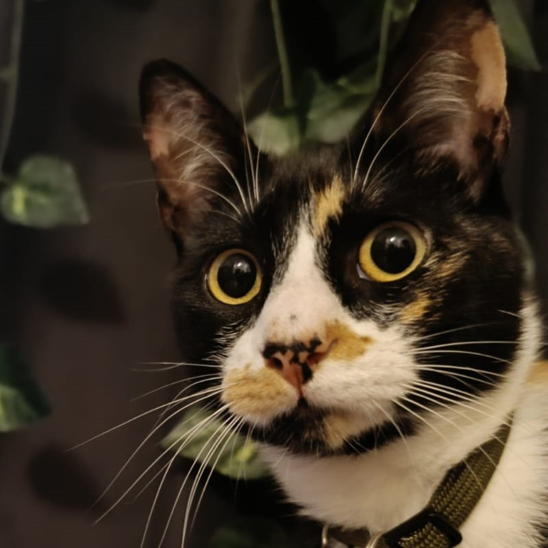

Agatha
Lady Agatha of Atunton (mas conocida como Poceta™, devoradora de mundos) es una gata cálico que se caracteriza por su particular carácter rebelde. Sus cabelleras de variados colores pueden ser apreciadas saltando por los confines de la casa de sus adorados padres. Más allá de sus dotes aventureros, es una pequeña muy amada y con un gran corazón.
